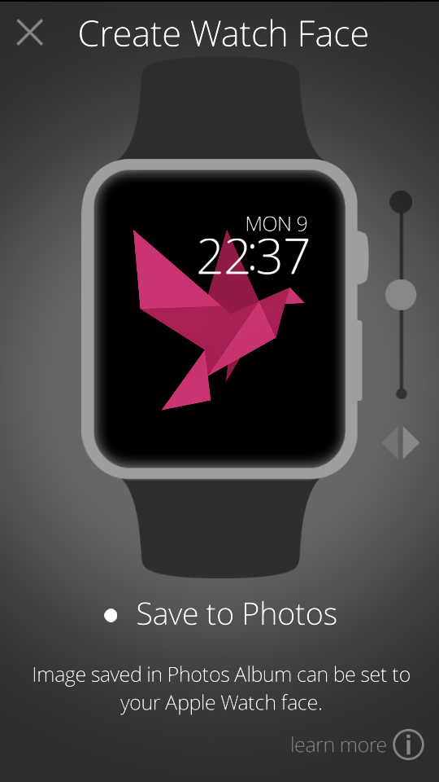
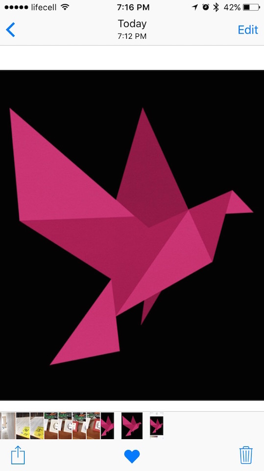
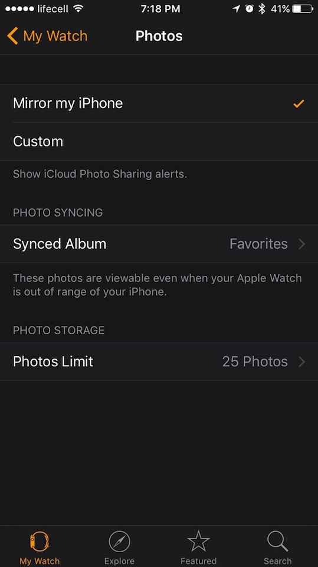

1. Save image to your Photos album.
2. Go to Photos and add image to you favorites by clicking hart at the bottom.
3. Go to Watch app and in Photos setting select “Favorites” for Synced Album.
4. Now your favorites photos from iPhone have to be synced with your Apple Watch. Go to Photos in your Apple Watch and select shared image.
5. Tap and hold on the image until “Create Watch Face” dialog appeared. Click on the button to set the image as watch face.
6. Now your new watch face is ready.